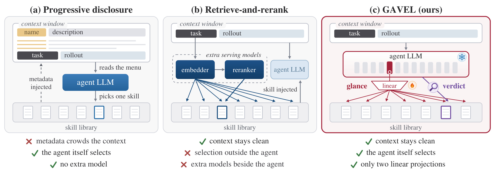
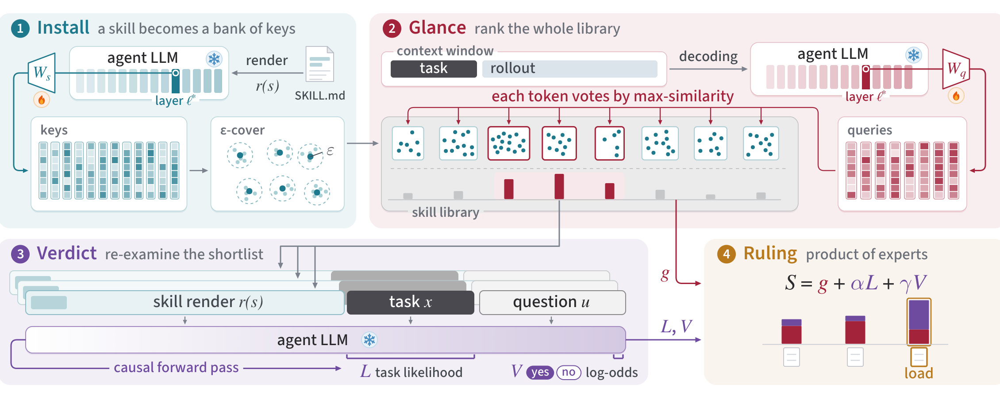
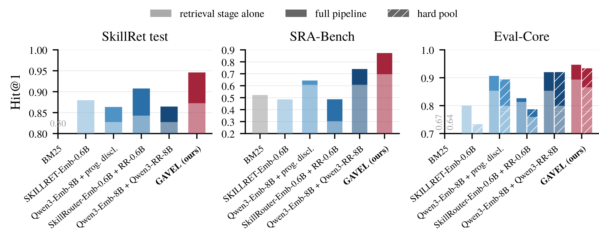
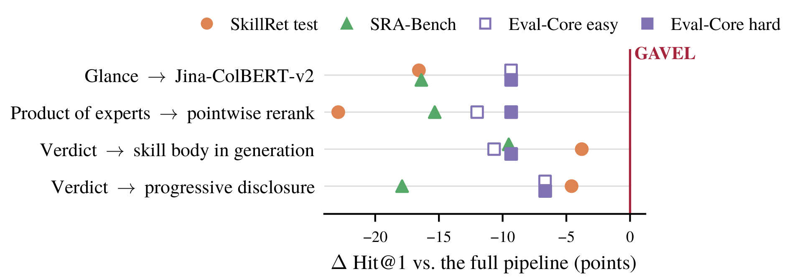
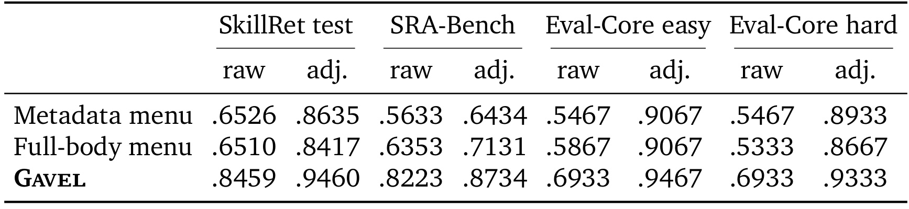
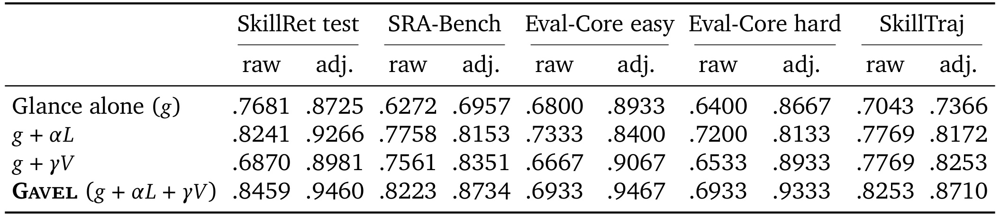
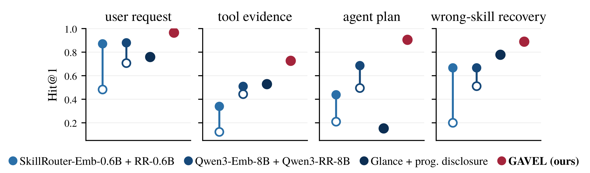
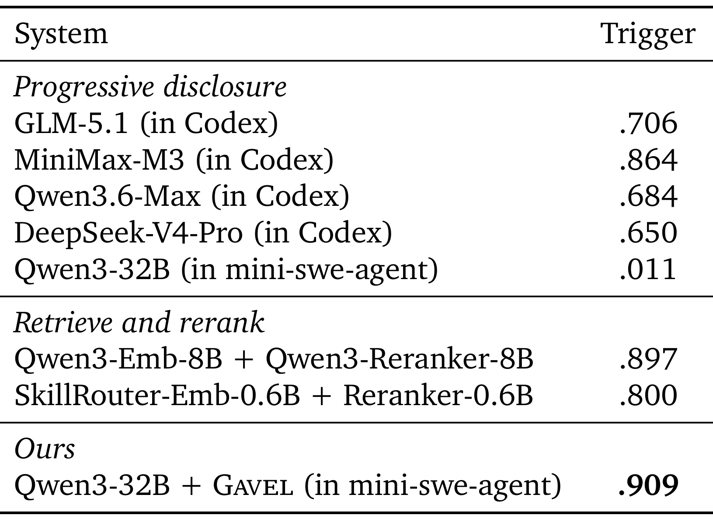
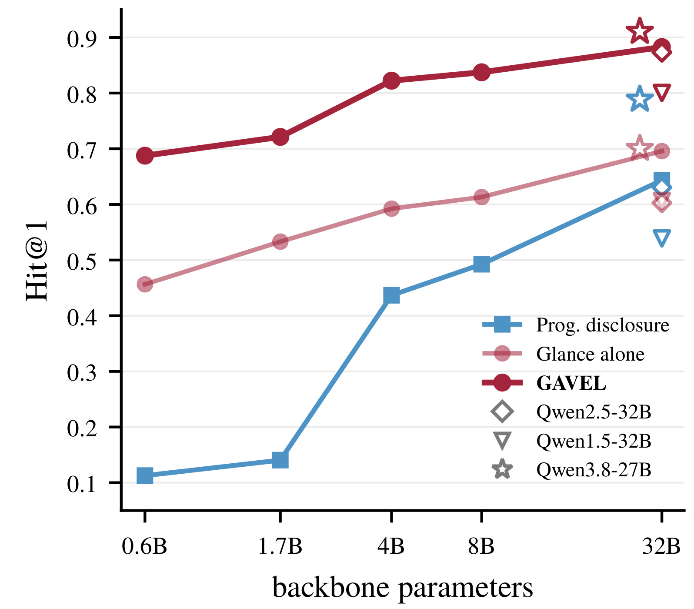

Gavel：从冻结大模型内部读出技能路由能力
《The Router Within: Eliciting Native Skill Routing from a Frozen LLM》由清华大学交叉信息研究院的 Ruishuo Chen、Xun Wang、Yu Chen、Zhuoran Li 与 Longbo Huang 提出，2026 年 9 月 14 日公开。论文入口：arXiv:2609.15982。本文按首次公开版本精读；未核验到独立代码发布入口。Gavel 将技能发现拆为读取中间表示的 Glance 与利用模型完整注意力的 Verdict，主体模型保持冻结。
把所有技能的元数据预先放进上下文，会分散智能体的注意力并限制技能库大小；改用外部检索模型，又让技能选择脱离智能体自身的判断能力。能否在不提前占用任务上下文的情况下，直接用智能体已经具有的能力选择技能？
1. 背景和问题
技能是智能体可按需读取的一包操作知识，通常包含说明、脚本与参考材料。它不同于只给出名称和参数的函数签名：一份技能可能规定工作顺序、输入输出格式、验证步骤，以及什么情况下不该调用某个工具。因此，选择正确技能涉及“这份说明能不能完成当前工作”，仅靠关键词相似并不充分。例如处理一个表格文件，任务可能是读取数据、恢复损坏格式或生成可编辑成品；三者共享主题词，却需要不同能力。论文把任务和技能库之间的选择作为独立环节，研究在大量候选中找到真正有用的文档。
通常的渐进披露先把技能名称和简介写入系统提示，让模型自行决定是否继续读完整文件。这个设计有一个吸引人的性质：选择由执行任务的同一个模型完成，它能结合用户限制与已有工作理解需求。然而“渐进”只适用于正文，元数据仍随技能数量增长。候选越来越多时，目录本身占据上下文位置，模型在每次生成中还要注意这些条目。论文引用已有研究讨论上下文拥挤和注意力分散，把它们作为设计动机；本文没有重新做一个控制所有变量的通用长上下文退化实验，因此不应把相关引用解释为本论文已证明的普遍因果定律。

Figure 1 把问题分成两个轴：任务上下文是否被技能菜单占据，以及选择能力来自智能体还是独立模型。左侧路线让模型读取菜单，具备内部判断能力，却需要把所有简介带入持续执行的上下文。中间路线把目录移到外部，先用向量检索找到候选，再重排后注入选中的技能；任务上下文更干净，但选择依赖另一套模型。右侧方案使用冻结主干的表示和输出概率，只有最终选中的技能进入正常任务上下文。图中“上下文干净”并不表示整个系统从不处理技能文本：安装阶段会读技能，判决阶段也会把候选与任务放在一起。区别是这些前向计算在执行轨迹之外发生，其文本不成为后续每一步都需要携带的任务历史。
这个对照揭示了论文的真正对象。它没有提出新的技能文件格式，也没有解决如何编写更高质量技能；它在既定文档库上改造选择接口。如果技能本身过期、工具权限不足或说明有误，选对文档仍可能失败。相反，实际任务常有多个合理技能，严格要求命中一个标注名称也可能低估路由质量。因此，后续实验把“选择能服务任务的技能”与“加载标注技能”分成不同指标，阅读结果时要保留这种区别。
外部检索的问题也不只是额外参数量。向量检索一般把查询压成一个整体，适合主题匹配；执行中的上下文却包含用户要求、工具输出、失败尝试和智能体临时计划。真正触发技能需求的证据可能只是一句话，其余历史主题很多且相互干扰。如果输入整条历史，关键需求容易被平均；如果只输入最后一条消息，又可能丢失前文约束。论文希望复用智能体已经计算的隐藏状态，因为这些表示是在实际执行上下文中产生的，可能已经保留了任务需要的语义。
但是“隐藏状态含有信息”与“直接拿来检索有效”相距很远。语言模型原来的注意力查询和键服务于同一序列中的下一词预测，未必能跨独立编码文档比较。附录 A 尝试原生注意力键、原生头初始化和训练检索 token 等路线，得到的结果并不支持零训练直接使用。最好的未训练配置在 SkillRet 验证库上 Hit@1 只有 0.001，而训练后的 Glance 达到 0.918。这里的两个数字对应附录诊断设置，不能与后面公开测试结果直接混为一表；它们说明需要一个专门训练的读出接口。
作者提出三个约束来限定接口。第一，技能选中前，任务轨迹只包含任务内容，不预载整个库的菜单。第二，尽量依赖执行模型自身能力，新增参数应很轻。第三，新技能安装时只能做索引，不能每增加一个技能就重新训练。第三点尤其重要：若训练参数与每个技能身份一一绑定，库更新就变成模型更新；Gavel 训练的是共享投影，因此新文档可用同一读出方式编码。这种共享读出与可增长索引的分工，也是它与按工具学习专属向量的方法之间的差别。
对推荐与搜索研究者来说，最熟悉的部分是两阶段选择：先粗筛全库，再对少量候选做复杂判断。但本论文的贡献不能简化为“给技能做召回与排序”。它让两阶段共享同一个冻结主干，并把第一阶段的分数保留到最终决策；新增能力是从执行中的模型内部读出，候选文档则离线建索引。可以借鉴的是如何把昂贵交互限制在短名单，以及如何避免整体池化埋没稀疏需求；论文没有做用户点击预测，也没有验证将此路由器迁移到商品推荐后的效果。
技能的输入也并不天然干净。安装时读入的正文可能既讲功能，也混有使用示例和边界条件；路由必须在这些段落里找出实际能力，不能把出现频繁的主题当作唯一线索。逐词匹配之所以值得研究，正是因为一个长文档内部也存在不均匀的信息密度，而非所有位置都对选择同样重要。
另一个需要提前区分的问题是“选哪一个”和“什么时候选”。书面任务基准直接给出查询，路由器自然知道开始时点；实际智能体必须自己判断当前是否值得调用技能。Gavel 主方法解决前者，端到端实验再加一个门控器解决后者。摘要中只有两个投影需要训练，主要指路由器本身；实时部署还训练了一个轻量门控分类器。如果忽略这个附加训练，就会把完整部署误写成完全无监督的自动调用机制。
2. 方法
2.1 Glance：逐词读出并投票
记冻结主干为 $M$，当前任务或执行上下文为 $x$，技能库为 $\mathcal S$。作者选取一个中间层 $\ell^*$，通过不同的线性投影读取任务词元与技能词元。Qwen3-32B 上选择第 45 个 block 的输出，也就是零起始层索引 44；判据是在去掉最高范数词元后，500 份技能表示的矩阵熵达到谷底。两个无偏置矩阵均为 $768\times5120$，合计约 790 万参数。任务投影表达需要什么能力，技能投影表达提供什么能力，二者都进行单位范数归一化，避免长度和幅度直接主导匹配。

Figure 2 应沿安装与查询两个时间方向阅读。左上角把技能按固定模板送进主干，保存元数据和正文各词元的键，再压缩为代表性键集合；这是文档安装时的工作。右上角在任务推理时读取相同层的状态，把每个任务词元投影成查询，逐一匹配整个技能库。左下角只处理短名单，将安装时的技能前缀继续接上任务与判断问题；右下角汇总三种分数后选择加载对象。这样，技能正文既参与了索引，也参与了精判，不被压成只有名称的菜单。
这张图还有一个容易漏掉的区别：离线保存的低维键用于 Glance，而判决复用的是主干前向过程中的技能前缀。低维键缓存与主干 KV 缓存不是同一种存储，不能把前者的压缩倍数直接当作整个服务缓存的压缩倍数。主干仍是昂贵计算主体，但任务侧隐藏状态已经随正常推理产生，额外工作主要是投影、匹配和短名单精判。图上没有把所有技能并排塞进一次长上下文；每个候选分别接受完整注意力，因此不同候选不会在同一个巨大菜单中争夺注意力。代价则是多个前向请求，需要服务层支持批处理及前缀复用。
对一个任务词元，先保留它与某技能内部所有键的最大相似度，再用跨技能投票累计证据。核心公式为：
符号解释：$r(s)$ 是技能的固定渲染文本，$q_i$ 是任务第 $i$ 个词元的查询，$d_j^s$ 是技能第 $j$ 个词元的键；$\mathcal S^+$ 与 $\mathcal S^-$ 分别为训练正例集合与采样负例，$\tau$ 是原文采用的分数乘数，实验固定为 40。训练用平均匹配分数，推理却只让词元对自己最相关的少数技能投票；库规模超过一百时每个词元最多支持十个技能。分母包含所有词元权重，而不是只对支持某技能的词元归一化，避免一个很少被支持的技能因为分母小而虚高。轨迹上取 $w_i=2^{-a_i/64}$，其中 $a_i$ 是距当前决策位置的词元数；这个手工近期衰减有利于突出新需求，也意味着远处关键证据仍可能被降权，不能把它理解为完全内容自适应的注意力。
2.2 技能键的覆盖压缩
每个文档词元保留一个键会让库的存储随总文本长度增长。作者利用最大匹配这一算子的性质：如果许多键方向相近，它们对任何查询的作用都接近，可以只保留代表。具体使用最远优先遍历，每轮加入距离已有集合最远的键，直到所有丢弃键都在某个保留键的 $\varepsilon$ 邻域内。它按可区分方向而不是按原始长度分配容量，长篇重复说明因此可以压得更多。这里不生成新向量，只选原键子集，保留最大值不会凭空超过完整集合的最大值。
符号解释：$D_s$ 是技能完整单位键集合，$C_s\subseteq D_s$ 为其欧氏距离 $\varepsilon$ 覆盖，$q$ 为任意单位查询。证明直觉是给最优原键找一个距离不超过半径的代表，再用柯西不等式限制点积差。这个界约束单个最大匹配值，不保证最终技能排名不变；若分数恰好贴着词元投票的 TopK 切点，小扰动可能改变支持集合。附录只在离切点足够远的条件下把界传到投票。压缩后作者固定技能投影及键，只对查询投影短暂微调以适应几何变化。实验半径 0.83 带来约 8.5 倍键库压缩，各基准损失至多 1.6 个百分点；这属于实测权衡，不能从一个相当宽的理论界推导出如此小的准确率损失。
2.3 Verdict：任务似然与相关性判决
Glance 的任务与技能分别编码，能够做细粒度匹配，却没有双方完整交互。Verdict 为候选恢复这项能力：以技能渲染文本为前缀，接上当前任务，最后附加一个固定的是非问题。固定前缀可从安装过程继续计算；任务所有词元已经出现，因此可以直接读教师强制下的概率，而不必让模型生成整段任务。末尾问题在因果掩码下不会反向改变任务位置，故一次前向同时给出任务似然与最终 yes/no 判断。
符号解释：$u$ 为固定相关性问题，$\mathcal Y$ 和 $\mathcal N$ 汇集 yes/no 的大小写与前导空格单词形式；$\alpha,\gamma$ 将不同量纲的分数转到适当尺度。$L$ 衡量有了这份技能后，模型能否更好预期当前任务措辞；$V$ 衡量模型被直接询问时是否认为技能有用。技能库先验均匀时，任务似然可经贝叶斯关系联系到技能后验；对比分数也可在负采样分布假设下解释为后验比。这个解释帮助组织融合，但三个读数高度相关，论文没有证明它们是条件独立的证据，也没有保证输出是校准概率。指数化之后是专家乘积，降低某个候选的一个分数可以抑制另两路的勉强支持。实验固定 $\alpha=1.0,\gamma=0.025$，并只精判与 Glance 最佳分数差不超过 0.133 的候选，平均约九个。均匀先验、验证集校准和固定裁剪门槛都是结果成立的具体条件。
2.4 在线门控与拒绝加载
实时部署不能每个词元都执行九次精判，因而需要一个便宜门控。门控读取此前累计的 Glance 分数和当前位置最后层状态，是另外训练的线性分类器；连续两个词元判为应该触发才启动选择。如果最终胜者的 $V<0$，系统不加载技能。选中时，正在生成的半句话保留在上下文，技能全文作为新消息加入，助手再开始新一轮生成。这个控制流程使中途出现的工具证据也能触发路由，但仍可能切断一句话，并不等同于模型自己学会了自然的技能调用动作。
门控训练正例来自 SkillTraj 标注时点，负例为同样构造但无需技能的轨迹。作者把它定位为端到端信号能否存活的验证，没有把触发时机优化作为主要贡献。因此，部署收益应拆为门控找时点、Glance 保留候选、Verdict 判断适配、执行器使用文档四层；其中任何一层出错都可能影响任务。附录提议未来用序列模型读取分数历史，或在主干中训练专门调用 token，但这两项均未在当前工作验证。云端闭源 API 若不暴露隐藏态，客户端无法直接复现 Glance，必须由提供商在推理内部托管读出器，这也限制了它作为普通外部插件的直接可用性。
3. 实验结果
3.1 三个书面任务基准
主实验在冻结 Qwen3-32B 上训练一次共享投影，使用 SkillRet 中 51,104 条训练查询与 9,084 个技能。测试 SkillRet 包含 4,997 条由另一模型撰写的查询及 6,660 个保留技能；SRA-Bench 使用 861 条分层抽样任务与 26,262 个技能，许多文档是网页过程说明；Eval-Core 有 75 条真实项目任务文件，在两种共约 7.8 万文档的池中检索。这里的迁移既涉及查询作者，也涉及查询形式、文档体裁与库规模。超参数在 SkillRet 验证集上确定后固定，其他库上的结果称为零样本迁移，不能误写成路由器从未经过训练。

Figure 3 的浅色表示检索阶段直接选择第一名，深色表示包含后续选择的完整流程，Eval-Core 的斜线表示困难候选池。Gavel 完整流程在三类基准均领先，作者报告相对最强完整对照，在 SkillRet 提升 3.8 个百分点，SRA-Bench 提升 13.4 个百分点，Eval-Core 提升 1.3 至 2.7 个百分点。附录给出的 Gavel 裁判调整后 Hit@1 分别为 0.9460、0.8734、0.9467 和 0.9333；Eval-Core 只有 75 条任务，因此百分之几常常只对应一两次选择，不能把它与数千样本的差异视作相同证据强度。
这张图最有解释力的是跨域形状。专门技能检索模型在与训练分布接近的 SkillRet 较强，但在项目文件和网页过程说明上退化，某些结果低于 BM25。通用 Qwen3 嵌入模型则更擅长文档式输入，却在对话请求上落后。Gavel 的优势没有简单对应“参数更多”，而是读取主干语义后再对候选进行完整交互。与此同时，图中的 Hit@1 采用裁判补充认可：若选中一个未在原始金标里的技能，裁判仍可能认为它同样或更适合任务。它衡量语义适配，不是严格命中原始名称的比例，更不是实际运行成功率。
原始标注不完备是一个合理问题，但机器裁判也引入另一层不确定性。作者让 GPT-5.6 Sol 将候选与每个金标以两种顺序比较，候选胜出次数不少于失利次数就认可，减少位置偏好；附录还做了 200 对人工复核。正文应同时看 raw 与 adjusted，而不能只取更高的一列。以 SkillRet 为例，完整系统从原始命中 0.8459 到调整后 0.9460，说明大量获认可的选择并不等于官方唯一标注。不同路由器可能产生不同风格的文档，裁判判断对长文、描述清晰度或潜在可用性的偏好仍可能影响相对排名。
3.2 替换机制与信号消融

Figure 4 每行只替换一项设计，以完整流程为零点，横轴是 Hit@1 的百分点变化。用 Jina-ColBERT-v2 代替 Glance，即使仍保留后续 Verdict，也会在各基准下降；这说明收益不能完全归因于逐词最大匹配。只使用模型的点式相关性判决而丢弃 Glance 和任务似然，在歧义查询上退化，说明后级并不总能可靠地独立接管。把输入顺序改为先任务后技能，并使用技能正文的生成似然，同样表现较差；技能正文写得像模型常见文本，并不必然意味着它服务当前任务。校准甚至把这种文档似然的系数压到零。
最后一行把候选交给渐进披露菜单，检验单次菜单选择能否替代候选逐一精判。SRA-Bench 下退化尤其明显，因为网页标题或简介无法概括过程细节；Eval-Core 的人工整理技能简介更有效，因此差距小。不能仅凭这张图断言所有长上下文模型都无法看菜单：它检验的是特定主干、候选与提示。但四项替换共同支持完整设计中各环节都有作用，而非一个更强主干加任意外壳就自动得到同样结果。消融也没有覆盖所有联合替换，因而不宜把每行下降相加作为总贡献；信号之间存在互补甚至抵消关系，组合后的错误分布需要单独检查。
作者另用 Qwen3-Embedding-8B 替换 Glance，并保留相同 Verdict，提供了对细粒度检索之外的复核。SkillTraj 调整后分数为 0.7796，低于完整系统的 0.8710；这九点一的差距发生在完整精判仍可用的条件下。由于替换同时改变了候选集及融合里的检索分数，它不能单独量化哪个变化占主因，但足以说明短名单入口没有被后级完全修复。

Table 2 直接回应“是不是只因对照没看到正文”的疑问。作者将二十个候选全文都加入菜单，扩展上下文到 131K，最长提示达到 124K；同一检索前端、同一选择主干与裁判保持不变。SRA-Bench 调整后分数从 0.6434 上升到 0.7131，说明过程细节确实有用；但 Gavel 为 0.8734，仍高出约十六个百分点。SkillRet 全文菜单反而从 0.8635 降到 0.8417，Eval-Core 变化只对应少量查询。提供更多文档内容因而不能稳定换来更好选择。
成本方面，全文菜单提示中位数扩大到约 2.8 万至 5.2 万词元，单次预填充需 26 至 124 秒，属于该实验设置的测量，并非所有服务统一延迟。值得区分两个原因：简介不足会导致信息丢失，而多候选全文同时出现还会造成候选间干扰和更高计算负担。SRA-Bench 的上升证明前者存在，全文仍落后说明仅补齐信息不够。论文并未精确分离注意力分散、位置偏好和推理难度各自贡献，因此更保守的结论是这种批量菜单接口在测试中效率和准确性都不及逐候选读出，而不是已经找到长上下文退化的唯一原因。
读表时还要注意全文菜单并不是让每个候选单独读完后投票，而是所有正文一起放进提示，再要求输出一个索引。这个受控变化保持候选来源一致，因此没有通过换一个更差召回器人为拉低对照。即使如此，候选的长度差异、相互重复和排列位置仍可能改变选择行为；对于部署者，全文是否放得下只是容量条件，放进去后能否有效比较是另一个问题。表中的提升也不是免费获得，长预填充会延迟真正执行。将准确率与预填充成本并列考虑，比单独展示更大的上下文窗口更贴近这个实验的含义。

Table 3 保留 Glance，只分别删除一种 Verdict 信号。SkillRet 上，仅加入任务似然得到调整后 0.9266，仅加入是非判断为 0.8981，完整融合为 0.9460；该库查询较明确，正确技能更容易帮助预测任务措辞。SRA-Bench 则是判断信号更强，两个单信号分别为 0.8153 与 0.8351，完整为 0.8734。SkillTraj 上对应 0.8172、0.8253 与 0.8710，说明在动态状态下，直接问适配性有帮助，但它仍不能替代另一种读数。
最值得保留的反例来自 Eval-Core：只加任务似然后，调整分数由 Glance 的 0.8933、0.8667 降到 0.8400、0.8133，而完整融合恢复到 0.9467、0.9333。一个信号在某些库有正收益，不意味着它是可靠的通用路由分数；任务措辞的可预测性可能偏向语言形式，未必符合项目所需能力。这也限制了专家乘积的理论解释：所谓同一后验的三种视角，并不是三套都已校准且永远正确的概率估计。融合有效是跨多个测试设置的实证结果，权重失配和分布漂移仍需要监控。表中 raw 与 adj 排名偶有差异，进一步提醒我们把标注命中与裁判认可分别汇报。
从数值看，完整融合相对更好的单信号方案，在 SkillRet 约多一点九个百分点，SRA-Bench 约多三点八个百分点，SkillTraj 约多四点六个百分点，Eval-Core 的每个池对应三条任务。收益并不均匀，说明融合解决的不是一个固定比例的通用错误。尤其在样本很少的项目任务库里，应保留逐任务差异，而不将三条任务的改变夸成稳定的大幅突破。作者没有报告每种信号之间的误差相关矩阵，因此“互补”目前主要由组合结果高于单路来支持，还不能据此精确定位每个错误由哪一路挽回。检索候选一旦漏掉适合技能，表内任何融合都无法把它重新加入，这也是评价完整架构时必须保留召回指标的原因。
3.3 SkillTraj 中途出现的技能需求

Figure 5 包含用户直接提出需求、工具结果揭示需求、智能体计划产生需求、误读技能后恢复四种情形，分别有 116、106、105 和 45 条轨迹，共 372 条。轨迹由 GPT-5.6 Sol 生成，再由 Claude 检查标注点前后是否真的发生需求变化，以及金标是否能解决需求；失败样本重新生成，不是局部改写。这是经过筛选的模拟执行历史，具有工具调用外观和明确触发点，但不是从生产智能体自然运行中随机采集的日志。
每条外部检索路线分别用完整历史与最后一条消息测试，空心和实心点显示这两个输入选择。大多数情况下，只看最后一条消息反而更好，说明长历史中的无关主题会干扰外部表示。Gavel 在四种情形均领先最强对照，幅度为 8.6 至 21.9 个百分点。它读取主干上下文状态，同时通过近期权重凸显新线索；Verdict 使用最近消息，因此并非在每个候选上重新完整推理全部长历史。误技能恢复里，助手常会明确总结缺少什么能力，菜单对照较强；智能体计划里，需求细节更隐含，正文级判断优势更大。
这个实验在方法上比单轮查询更接近智能体，但评分仍发生在已知正确时点，不能评价触发过早、触发过晚或不该触发时调用技能的频率。生成与审查模型可能使需求表达比真实日志整洁，四种情形的样本量也不均衡，尤其恢复场景只有 45 条。若将这些结果用于实际部署，应先在自然轨迹中测门控和选择的联合质量，而不应直接将最高二十一点九的离线增益当作线上任务收益。它验证的是噪声上下文中的技能适配性，尚未测整个执行过程中错误如何累积。
3.4 可执行任务里的正确技能触发

Table 1 在 177 个可执行任务、79 个整理后的技能上比较触发率。Qwen3-32B 在同一个 mini-swe-agent 中使用渐进披露，正确加载率仅 0.011；接入 Gavel 后为 0.909。两个外部检索重排系统分别为 0.897 和 0.800。这里最直接的受控证据，是同主干同运行框架下 Gavel 补上了读取技能的行为；同主干模型并非没有选菜单的能力，附录强制它第一步读自己选的技能后能达到 0.834，说明自主决定去读文档是重要瓶颈。
表中 GLM、MiniMax、Qwen 与 DeepSeek 前沿模型数字来自 Skill-Use 原论文的 Codex 实验，不是作者在相同环境下重新运行。它们与 Gavel 的主干、运行框架和提示习惯都不同；表里甚至引用的是原基准两种框架中更高的 Codex 数字。因此可以说该配置的正确技能加载率超过这些已报告值，不能据此称三百二十亿参数主干的总体智能超过前沿模型，也不能把 90.9% 写成任务成功率。加载正确文档只是执行前的重要条件之一，远非完整终点，后续代码、文件内容和验证仍可能失败。
附录真实运行例子说明门控如何发挥作用：模型先找错表单路径，经历工具反馈后才在准备填表时触发；另一个任务在第三轮读完说明后触发；还有任务先加载标注技能，随后根据认证配置再加载另一个非金标技能。全体任务共发生 181 次加载，其中十七次发生在后续轮次。额外的非金标技能有时确有用途，但也揭示单一金标触发率难以完整描述多技能工作流。论文没有提供一个统一任务结果分数来证明多次加载总体净收益，因此需要把这些轨迹作为机制案例，而非成功率统计。
3.5 主干扩展与成本边界

Figure 6 在 SRA-Bench 上比较 Qwen3 不同尺寸，并加入相同约三百二十亿参数设置下的不同代际以及 Qwen3.8-27B。横轴是主干参数规模，纵轴是技能路由 Hit@1，折线、空心形状和星形分别表示不同比较系列。总体上 Glance 与完整 Gavel 随主干增强而提升；甚至较小主干上的 Gavel 也能超过大主干菜单选择。这里不是只替换模型权重就原封不动读同一套投影：不同主干需要各自训练与适配读出器，所谓继承能力描述的是方法随主干扩展的趋势。
图中 Qwen3.8-27B 的菜单选择仍比同主干 Gavel 低 12.2 个百分点。附录另换 Gemma 家族，主要排序趋势保留，但 Verdict 的融合标度需要该主干自己的校准。因而证据支持这个架构不限于 Qwen3 单个尺寸，不支持不训练不校准地搬到任何模型。图上的每个点也只测一种技能库和评估方式，没有给出广泛任务能力的变化；它说明更强内部表示可以改善选择接口，而不是所有模型扩展收益最终都来自路由。
成本分析要同时看离线索引、在线候选匹配与精判。附录按平均技能约一百词元元数据、一千八百九十五词元正文、查询二百三十九词元和每次九个候选估算，使用文中注明的历史 API 价格，得到一次触发约八美分。渐进披露按首次写缓存及后续每次读缓存收费；一百技能、五十次调用约二十五美分，与三次 Gavel 触发约二十四美分接近。这只是论文设定的账单例子，未在本笔记重新核验当前商业价格，也没有把它当成现在的报价。
尤其不能从“复用隐藏状态”推断免费。Glance 仍需扫描低维键库，主干技能前缀要么占 KV 存储，要么重新预填充；九个候选精判可能并行，也可能受显存与并发调度限制。文中约半秒是对现代服务栈的量级描述，并非跨硬件实测基准。云服务是否提供缓存写入定价、路由中间态访问和批量判决接口，会决定可实现成本。论文最稳固的系统优势是把全部技能菜单移出持续执行的上下文，而不保证任何库规模、触发频率和缓存命中率下账单都更低。
4. 总结
Gavel 最值得记住的是三个相互配合的决定：从冻结主干的中间层学习跨序列读出，以逐词最大匹配保留稀疏需求，再把候选放到主干完整注意力下读取任务似然与相关性判断。第一阶段不是普通单向量检索，第二阶段不是生成冗长理由，最终也没有丢弃检索证据。两套共享投影和可安装的技能索引，让新增文档不必更新主干；覆盖压缩又利用最大算子的几何性质削减低维键库。这些设计共同解释了论文为何能在不同文档体裁上表现稳定。
从实验证据看，书面任务的跨库比较和多组消融构成主要支撑，尤其全文菜单仍然落后以及单一 Verdict 信号不能稳定替代融合两项结果，排除了相当一部分简单解释。SkillTraj 把研究从干净查询推进到多轮状态，但它是生成和筛选出的轨迹；Skill-Use 展示实时触发确实可以集成，却只报告加载正确技能的比例。论文的贡献是改善技能发现与调用接口，尚未形成从路由质量到终端任务产出、时延、费用与错误恢复的全链路量化结论。
我认为这套方案对持有本地主干、可改推理栈并维护大量技能的系统更有直接价值。它需要中间层状态、投影计算、离线文档前缀与缓存调度，普通只调用文本 API 的客户端没有这些接口。若服务提供商将读出器作为模型能力公开，技能可像缓存前缀一样安装；但那是附录提出的部署路径，不是当前已经发布的服务。代码入口未核验也意味着，参数少不能直接等同于低复现门槛；训练数据加工、模板细节、裁判实现和缓存行为都要独立恢复。
与推荐系统的联系主要是候选发现和决策分工。一个长期问题是轻量召回只擅长主题近似，后级却需要真正任务适配性；Gavel 提供了共享底座、保留多路证据的具体例子。但商品点击受用户偏好、曝光偏差、位置和反馈影响，技能适配性评判并没有这些变量。直接把技能替换成商品再复用损失，只能作为新研究假设，不能从本文成绩推出推荐排序收益。更值得迁移的是明确哪些信息可离线索引、哪些必须在线交互，并为每个阶段设置可测的错误边界。
后续最关键的验证应落在自然执行日志：用真实工具错误、冗余技能、多步计划和无技能需求的任务同时测试触发与拒绝；分别统计漏触发、误触发、正确选择、任务完成及额外时延。还应考察技能更新是否及时使缓存失效、重复文档是否抢走投票、过长技能是否因截断丢失限制，以及长期历史中的关键约束会不会被近期衰减忽略。这些问题来自当前接口的具体结构，并不是否定已有结果；它们决定离线选择优势能否持续转化成可靠执行。
最后，解读本论文需要保留四条界限：冻结主干不等于没有训练；正文不进任务轨迹不等于系统从不读正文；正确技能加载不等于完成用户任务；复用状态不等于零计算成本。在这些边界内，Gavel 展示了一个清楚而有潜力的方向：智能体已经计算出的表示可以成为技能选择的接口，而无需把整个技能目录变成每一步生成都必须携带的负担。